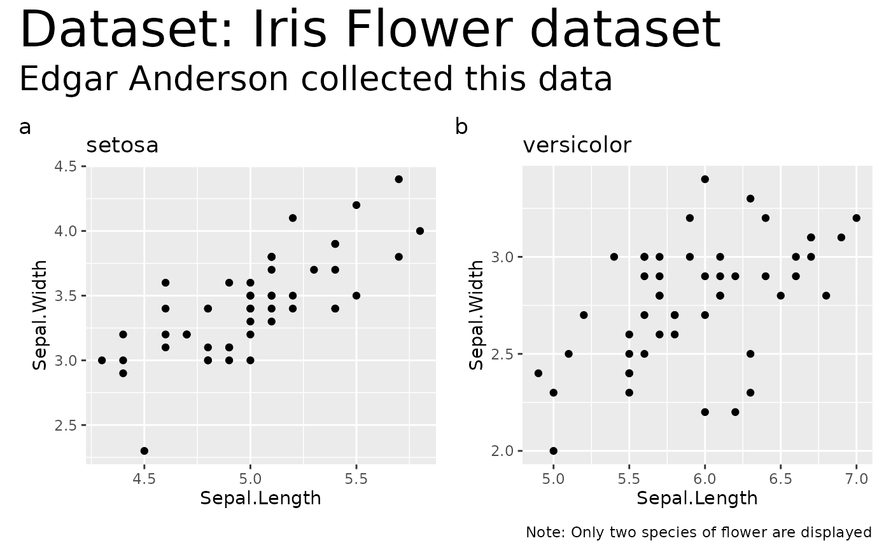

Wrapper around patchwork::wrap_plots() that will return a combined grid
of plots with annotations. In case you want to create a grid of plots, it is
highly recommended that you use {patchwork} package directly and not
this wrapper around it which is mostly useful with {ggstatsplot} plots. It
is exported only for backward compatibility.
Arguments
- plotlist
A list containing
ggplotobjects.- plotgrid.args
A
listof additional arguments passed topatchwork::wrap_plots(), except forguidesargument which is already separately specified here.- annotation.args
A
listof additional arguments passed topatchwork::plot_annotation().- guides
A string specifying how guides should be treated in the layout.
'collect'will collect guides below to the given nesting level, removing duplicates.'keep'will stop collection at this level and let guides be placed alongside their plot.autowill allow guides to be collected if a upper level tries, but place them alongside the plot if not. If you modify default guide "position" with theme(legend.position=...) while also collecting guides you must apply that change to the overall patchwork (see example).- ...
Currently ignored.
Examples
library(ggplot2)
# first plot
p1 <- ggplot(
data = subset(iris, iris$Species == "setosa"),
aes(x = Sepal.Length, y = Sepal.Width)
) +
geom_point() +
labs(title = "setosa")
# second plot
p2 <- ggplot(
data = subset(iris, iris$Species == "versicolor"),
aes(x = Sepal.Length, y = Sepal.Width)
) +
geom_point() +
labs(title = "versicolor")
# combining the plot with a title and a caption
combine_plots(
plotlist = list(p1, p2),
plotgrid.args = list(nrow = 1),
annotation.args = list(
tag_levels = "a",
title = "Dataset: Iris Flower dataset",
subtitle = "Edgar Anderson collected this data",
caption = "Note: Only two species of flower are displayed",
theme = theme(
plot.subtitle = element_text(size = 20),
plot.title = element_text(size = 30)
)
)
)
